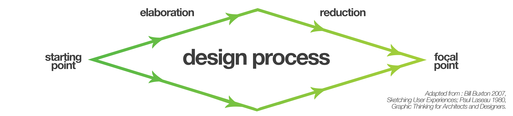

Description
The WaterBug is an autonomous 'Roomba-like' drone that waters your garden for you that you can control and track with a companion application on your smartphone.
This process journal details the steps me and my team took to create and refine the interface for the companion application from early sketches and ideation, to user-testing.


Problem space
It’s 2018 and autonomous vehicles are becoming prevalent, from Google and Tesla’s cars, to DJI’s drones, to China’s proposed automated transport system. As such, our project brief was designed to push us into this emerging
field and consider users might control these vehicles, how we might design the interfaces between users and AI.
The idea was to conceptualise and prove the need for an autonomous product, then design and develop the
user interface for it. Since autonomous vehicles is still a very broad field, we split into teams and chose a field to focus our research. We chose urban agriculture; that is any farming or gardening in inner city environments.
We felt that agriculture in itself was an easy target for automation and urban agriculture was both more accessible than the more commonly considered rural agriculture and there would be more room for innovation as it's a more
overlooked space.
Methodology
We started this project with research that led us to create problem statements from potential users and ideated solutions (elaboration), we kept elaborating until we felt we were happy with our ideas. Then we put our ideas under
scrutiny, validating them with user research until we cut down the ideas that didn’t appear to effectively solve real problems (reduction), once we settled on an idea we iterated and reduced it further, distilling it to the
final prototype.


Research Methodologies
Since our team consisted of four university students who had no gardens of their own, our research was cut out for us. To tackle the area we split the sector up into 4 main stakeholders that we thought would offer the most insight for our
project; Council, Developers, Architects/Developers and Decentralised farmers. I chose to research the council's role because it seemed they had the most direct and immediate impact on day-to-day urban agriculture
Foundational research
I built the basis of my understanding Urban Agriculture from online resources such as council documents, media reports and blog posts. I scanned for any pre-existing problem areas and used my new knowledge to inform the following stages of research
Academic Research
I accessed the University Library and online research databases such as ABARES, AgEcon, and JSTOR. I used these academic resources both to validate my previous findings and identify any other issues in the urban agriculture space
Semi-Structured Interview
I contacted a City of Sydney Employee to gain an understanding of the urban agriculture space from the council's perspective and how it might contrast to the corporate perspective that my partner JX was researching.
Contextual Observations
Since the employee I spoke with was from the head office in the CBD I wanted to get an on the ground understanding of the council's role in urban agriculture. I attended a workshop at the City of Sydney's community farm in Tempe and took notes on the plants, layout, participants and organisers
Contextual Interview
After recording my observations at the community farm I interviewed the attendees and organisers of the city agriculture workshop. I conducted the interview so I could understand what made people go there, how effective the workshops were and find out if there were any pre-existing issues in the space
Personas
After conducting these rounds of research I distilled my findings into three personas that reflected three potential users whose needs we would have to meet if we are to develop a product or service in the urban agriculture sector. You can view these personas in the image carousel below the research findings section.
Findings
Whilst I approached this research with an open mind it was only after that I realised how rigid and simplistic my understanding of urban agriculture, prior to conducting the research I had a very operational view of the
sector; people have plants and crops in their garden to get food, look pretty and maybe even make money. After investigating further I found there were benefits to urban agriculture, the scope and breadth of which I hadn’t
imagined; urban agriculture is a multi-million dollar industry that councils and governments are severely undervaluing, community gardens are a pillar of society, gardens provide people with invaluable fulfillment, and
while people love to garden life has an awful habit of getting in the way.
During the foundational research stage, I found reviewing documents from The Yarra Council in Melbourne concerning their urban agriculture
strategy. The key takeaway from the report was that community gardens are viewed as a ‘holistic solution to an array of social issues in the community’. Perhaps it was just that urban agriculture isn’t typically reported
on and backyard success is appealing subject matter, but during my online research I found a lot of reports that urban agriculture was a profitable niche good and that produce from backyard farms is of a higher quality
than mass market alternatives thus deserving of a higher premium.
The academic research elaborated further on the financial viability of urban agriculture and also made me realise the huge role government and councils
play in fostering urban farms and have been playing for decades, dating back to the ‘Grow your own’ campaign launched by Commonwealth Department of Commerce and Agriculture back in 1943. More startlingly a longitudinal
study by Dr James, S and Professor O’Neil on behalf of the NSW Department of Planning looked at all the agriculture projects in Sydney over 20 years and consistently found, year after year, the scale and value of Sydney’s
agriculture was severely undervalued by the ABS, with underestimations by 10 - 100 million.
Following these rounds of formal research I relaxed things a bit and got coffee with a City of Sydney employee in the cultural
strategy department. He hammered home the social benefits of community gardens, particularly for those who are elderly or disadvantaged. He was also critical of industry developments concerning urban agriculture, skeptical
of their motivations, explaining that Central Towers (a development known for its plants that hang along the side and community garden, a development that JX was also investigating for his sector) had actually implemented
their iconic vertical garden to cover up a poorly designed exterior that doesn’t meet ‘best practice’ and without which would be unacceptable.
My contextual observations at the City of Sydney community garden workshop
in Tempe was that there clearly wasn’t any issue with scale or funding, which went against my expectations. However I did notice that everything was done manually, carrying, planting and watering, as such there could definitely
be an opportunity there for automation.
Similarly the contextual interviews wasn’t quite what I expected. Different demographics had different motivations for being into urban agriculture; the older participants were
there more for the social element whilst the younger participants were there to learn and engage with farming from a sustainability standpoint.
Below I've generated three personas that encapsulate user needs drawn
from these findings.


.png)
.png)
.png)
.png)
.png)


.png)
.png)